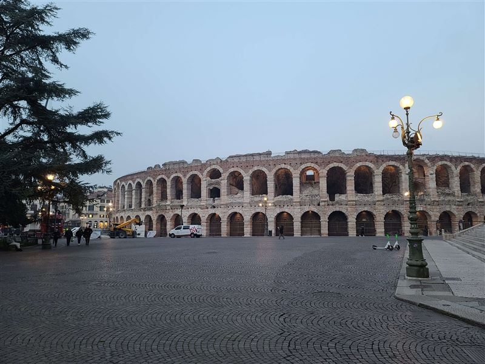
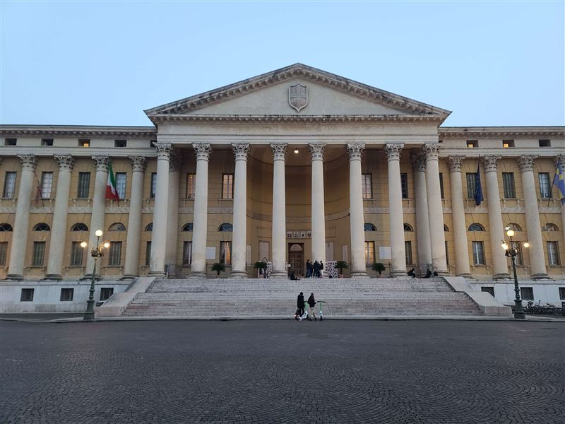
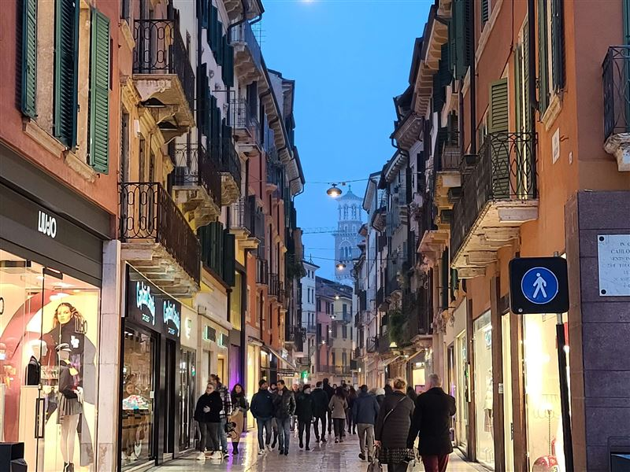
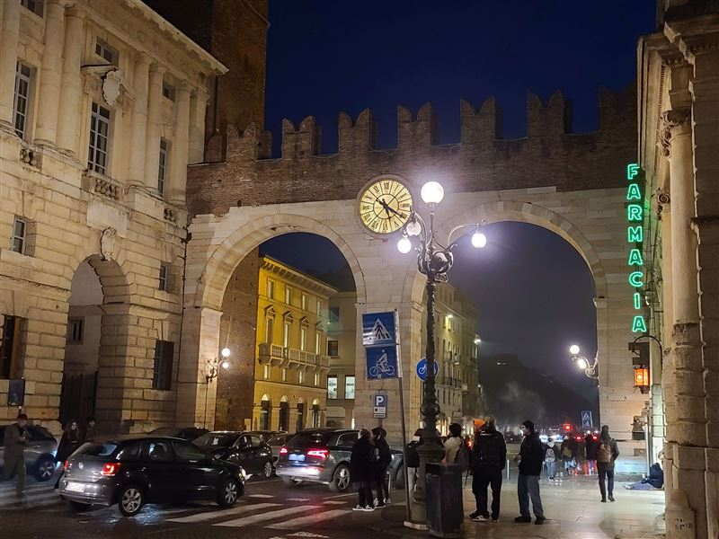
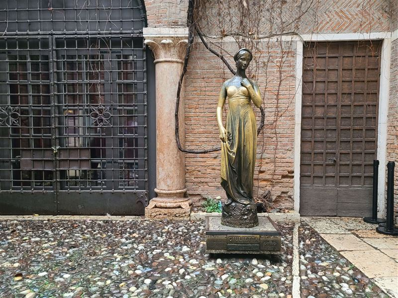
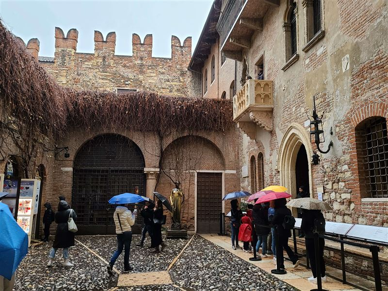
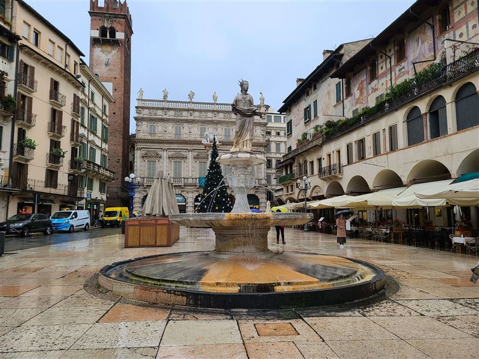
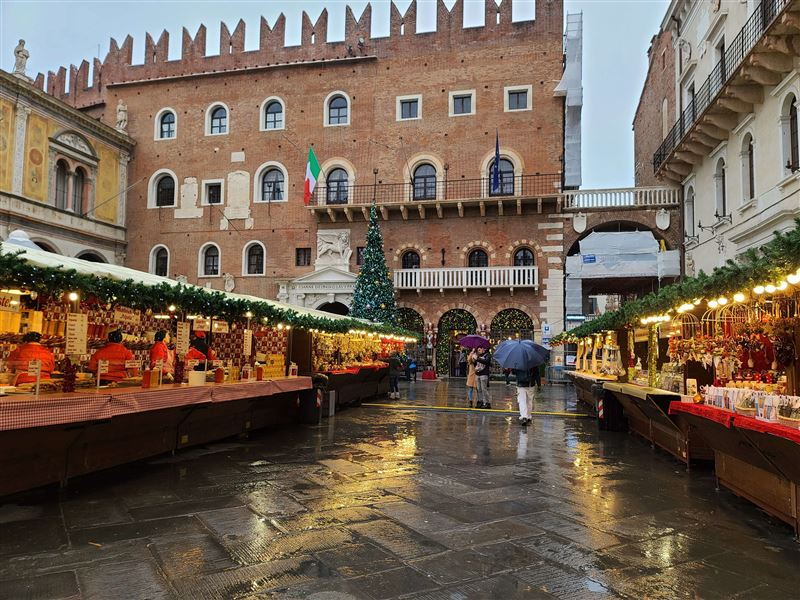
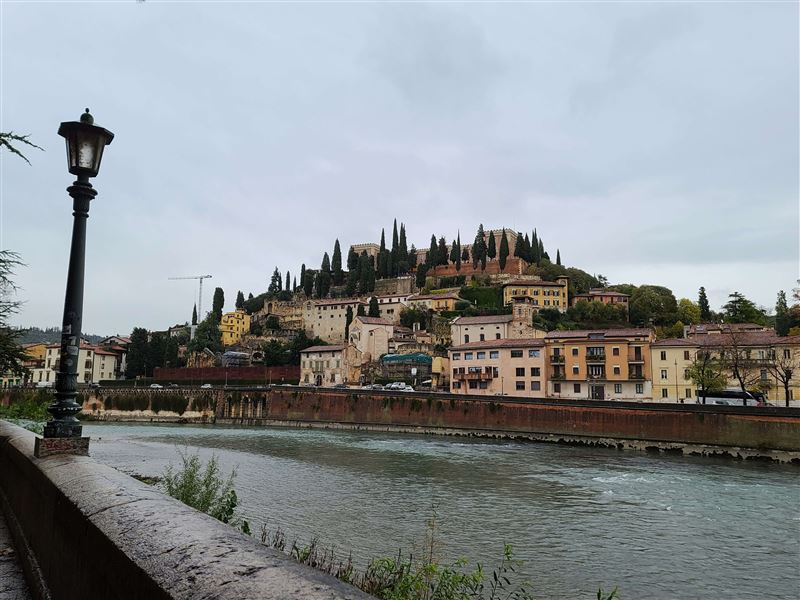
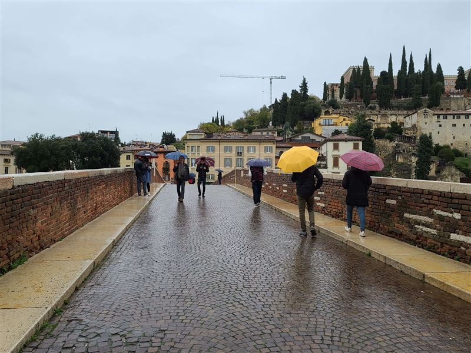

Explore Verona
A Brief History
Verona developed from a Roman settlement on the Adige at the crossroads of Alpine and Po Valley routes, leaving an arena, gates, and grid streets still used today. It became a medieval commune and later the stronghold of the Scaliger dynasty before passing to Venetian rule in 1405. Churches, bridges, and market squares record Roman urban planning and later civic building within fortified walls.
Attractions Map
Top Sights & Activities

Arena di Verona
The Arena was built in the 1st century AD outside the Roman city walls and remains one of the major surviving ancient amphitheaters in Italy. It later became a venue for public spectacle and, in modern times, large opera performances during the summer festival. The stone seating and elliptical plan still hold tens of thousands of spectators.

Palazzo Barbieri
Palazzo Barbieri was built in the 19th century in neoclassical form on Piazza Bra and now serves as Verona's town hall. Its position marks the civic edge of the arena district and the modern administrative center. The broad facade faces the square and the Roman amphitheater, linking municipal government with the city's most visible ancient monument.

Via Giuseppe Mazzini
Via Mazzini links Piazza Bra with Piazza delle Erbe along a Roman street axis that later became one of Verona's main commercial streets. Its shops and continuous facades show the city's long pattern of central pedestrian movement. The covered arcades and stone paving preserve the route that shoppers and residents have used for centuries.

I Portoni della Bra
The Portoni della Bra mark part of Verona's medieval and Venetian defensive circuit at the entrance to Piazza Bra. The gateway links the historic core with the broad public square around the arena. The stone arches and tower remnants record how the city controlled access between the walled center and the open space before the amphitheater.

Statue of Juliet
The statue in the courtyard of Casa di Giulietta became part of the modern literary identity built around Shakespeare's Verona. It stands within a site arranged for visitors near medieval buildings in the city center. The bronze figure is one of several elements that connect the house tradition with the Romeo and Juliet story promoted since the 20th century.

Casa di Giulietta
Casa di Giulietta is a medieval house adapted into a literary museum tied to the Romeo and Juliet tradition promoted in modern Verona. The site combines domestic architecture with later cultural storytelling for visitors. The courtyard, balcony, and interior rooms present the legend rather than documented historical ownership by the Capulet family.

Piazza delle Erbe
Piazza delle Erbe occupies the site of the Roman forum and became Verona's long-standing market square. Palaces, towers, and market activity around the piazza reflect the political and commercial center of the city. The frescoed facades, fountain, and daily stalls preserve a public space that has served trade and civic life since antiquity.

Piazza dei Signori
Piazza dei Signori developed in the medieval period as a political square surrounded by civic palaces of the Scaliger era. It remains one of Verona's clearest ensembles of communal and lordly architecture. The loggia, statue of Dante, and adjacent palaces frame a space used for events, markets, and passage between the main historic districts.

Castel San Pietro
The hill of Castel San Pietro overlooks Verona from the east bank of the Adige and has held fortifications from Roman and later periods. The terrace is now used mainly as a panoramic viewpoint above the historic center. A funicular or footpath leads to the terrace, where visitors can see the Roman arena, river bends, and tiled rooftops below.

Ponte Pietra
Ponte Pietra began in the Roman period and was rebuilt after wartime destruction using recovered stone where possible. It remains the oldest bridge site in Verona and links the theater district with the central city. The mixed masonry and single arch over the Adige preserve a crossing that has served Verona since antiquity.